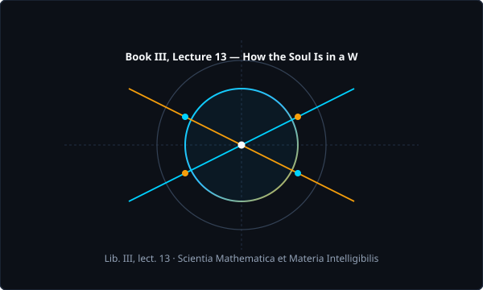

Book III, Lecture 13 — How the Soul Is in a Way All Things, the Hand the Organ of Organs, and the Intellect the Form of Forms¶
Liber III, Lectio 13 — Quomodo anima sit quodammodo omnia, manus organum organorum et intellectus species specierum

[lib. 3 l. 13 n. 1 · Marietti #786] After the Philosopher determined concerning sense and the intellect, now through what has been stated concerning both he shows what ought to be held regarding the nature of the soul. And this is divided into two parts: in the first, he shows that the nature of the soul is in a way as the ancients believed, and in a way otherwise; in the second, he shows the dependence of the intellect upon sense, at Now since neither is any thing. Concerning the first he does two things: first, he shows that the soul is in a way all things, as the ancients said; second, he says that it is all things in a manner different from what they said, at Now it is necessary. He says, therefore, first, that now recapitulating the things that have been stated concerning the soul so as to show what is proposed from them, let us say that the soul is in a way all things. For all things that exist are either sensible or intelligible; now the soul is in a way all sensible and intelligible things, because in the soul there are sense and the intellect or science, while sense is in a way the sensibles themselves, and the intellect the intelligibles, or science the knowables.
[lib. 3 l. 13 n. 2 · Marietti #787] And how this comes about we must inquire. For sense and science are divided into things—that is, they are divided into act and potency in the same manner as things are—in such a way, however, that science and sense that are in potency to sensibles and knowables correspond to knowables and sensibles that are in potency, whereas science and sense that are in act are ordered to sensibles and knowables that are in act, though in distinct ways. For sense in act, and science or the intellect in act, are the knowables and sensibles in act; whereas the power of the sensitive soul, and that which is able to know—namely, the intellective power—is not the sensible or knowable itself, but is in potency to them: the sensitive power to the sensible, and that which is able to know to the knowable. It remains, therefore, that the soul is in a way all things.
[lib. 3 l. 13 n. 3 · Marietti #788] Next, when he says Now it is necessary, he shows that the soul is all things in a manner different from what the ancients posited; and he says that if the soul is all things, it must be either the knowable and sensible things themselves—as Empedocles posited that by earth we know earth, by water water, and so with the rest—or else be their species. Now the soul is not the things themselves, as those thinkers posited, because a stone is not in the soul, but the species of the stone. And in this manner the intellect in act is said to be the very thing understood in act, inasmuch as the species of the thing understood is the species of the intellect in act.
[lib. 3 l. 13 n. 4 · Marietti #789] From this it is clear that the soul is likened to the hand. For the hand is the organ of organs, because hands have been given to man in place of all the organs that have been given to other animals for defense, or attack, or covering; for man prepares all these things for himself with the hand. And in a similar way the soul has been given to man in place of all forms, so that man may in a way be the whole of being, inasmuch as according to his soul he is in a way all things, insofar as his soul is receptive of all forms. For the intellect is a certain power receptive of all intelligible forms, and sense is a certain power receptive of all sensible forms.
[lib. 3 l. 13 n. 5 · Marietti #790] Next, when he says Now since, because he had stated that the intellect is in a way the intelligibles just as sense is the sensibles, someone might suppose that the intellect does not depend upon sense—and this would indeed be true if the intelligibles of our intellect were separated from sensibles according to being, as the Platonists posited. And therefore here he shows that the intellect needs sense, and afterward that the intellect differs from imagination, which likewise depends upon sense, at Now imagination is. He says, therefore, first, that because nothing understood by us exists apart from sensible magnitudes, as though separated from them according to being in the way sensible things appear separated from one another, it is necessary that the intelligibles of our intellect exist in sensible forms according to being—both those spoken of by abstraction, namely mathematical things, and natural things, which are the habits and attributes of sensibles. And on account of this, without sense no man can either learn, as acquiring science anew, or understand, as making use of science already possessed; rather, whenever anyone actually contemplates, he must simultaneously form for himself some phantasm, for phantasms are likenesses of sensibles.
[lib. 3 l. 13 n. 6 · Marietti #791] Yet they differ from them in this respect, that they exist apart from matter. For sense is receptive of species without matter, as was stated above, and imagination is a motion produced by sense according to act. Now from this it is clear that what Avicenna posits is false, namely, that the intellect has no need of sense once it has acquired science. For it is manifest that even after someone has acquired the habit of science, in order actually to contemplate he must make use of a phantasm; and on account of this, injury to a bodily organ impedes the use of science already acquired.
[lib. 3 l. 13 n. 7 · Marietti #792] Next, when he says Now imagination is, he shows the difference between imagination and the intellect: first, with respect to the common operation of the intellect, which is composition and division, saying that imagination is distinct from the affirmation or negation of the intellect, because in the combination of intelligibles there is already truth and falsehood, which is not in imagination; for knowing the true and the false belongs to the intellect alone.
[lib. 3 l. 13 n. 8 · Marietti #793] Second, at Now the primary, he inquires wherein the primary concepts—that is, the understandings of indivisibles—differ, seeing that they are not phantasms. And he replies that they are not without phantasms, and yet they are not phantasms: because phantasms are likenesses of particulars, whereas things understood are universals abstracted from individuating conditions; whence phantasms are indivisibles in potency, and not in act.